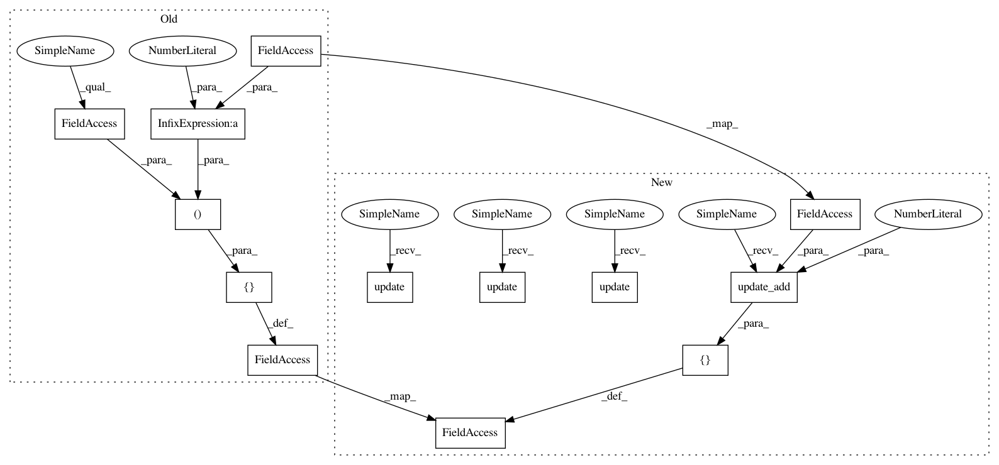

3533912016c64f1f03516657c1d93f02a11e5c67,keras/optimizers.py,Nadam,get_updates,#Nadam#Any#Any#Any#,448
Before Change
def get_updates(self, params, constraints, loss):
grads = self.get_gradients(loss, params)
self.updates = [(self.iterations, self.iterations + 1)]
t = self.iterations + 1
// Due to the recommendations in [2], i.e. warming momentum schedule
After Change
def get_updates(self, params, constraints, loss):
grads = self.get_gradients(loss, params)
self.updates = [K.update_add(self.iterations, 1)]
t = self.iterations + 1
// Due to the recommendations in [2], i.e. warming momentum schedule
momentum_cache_t = self.beta_1 * (1. - 0.5 * (K.pow(0.96, t * self.schedule_decay)))
momentum_cache_t_1 = self.beta_1 * (1. - 0.5 * (K.pow(0.96, (t + 1) * self.schedule_decay)))
m_schedule_new = self.m_schedule * momentum_cache_t
m_schedule_next = self.m_schedule * momentum_cache_t * momentum_cache_t_1
self.updates.append((self.m_schedule, m_schedule_new))
ms = [K.variable(np.zeros(K.get_value(p).shape)) for p in params]
vs = [K.variable(np.zeros(K.get_value(p).shape)) for p in params]
self.weights = ms + vs
for p, g, m, v in zip(params, grads, ms, vs):
// the following equations given in [1]
g_prime = g / (1. - m_schedule_new)
m_t = self.beta_1 * m + (1. - self.beta_1) * g
m_t_prime = m_t / (1. - m_schedule_next)
v_t = self.beta_2 * v + (1. - self.beta_2) * K.square(g)
v_t_prime = v_t / (1. - K.pow(self.beta_2, t))
m_t_bar = (1. - momentum_cache_t) * g_prime + momentum_cache_t_1 * m_t_prime
self.updates.append(K.update(m, m_t))
self.updates.append(K.update(v, v_t))
p_t = p - self.lr * m_t_bar / (K.sqrt(v_t_prime) + self.epsilon)
new_p = p_t
// apply constraints
if p in constraints:
c = constraints[p]
new_p = c(new_p)
self.updates.append(K.update(p, new_p))
return self.updates
def get_config(self):
In pattern: SUPERPATTERN
Frequency: 3
Non-data size: 13
Instances
Project Name: keras-team/keras
Commit Name: 3533912016c64f1f03516657c1d93f02a11e5c67
Time: 2016-07-19
Author: francois.chollet@gmail.com
File Name: keras/optimizers.py
Class Name: Nadam
Method Name: get_updates
Project Name: keras-team/keras
Commit Name: 3533912016c64f1f03516657c1d93f02a11e5c67
Time: 2016-07-19
Author: francois.chollet@gmail.com
File Name: keras/optimizers.py
Class Name: Adamax
Method Name: get_updates
Project Name: keras-team/keras
Commit Name: 3533912016c64f1f03516657c1d93f02a11e5c67
Time: 2016-07-19
Author: francois.chollet@gmail.com
File Name: keras/optimizers.py
Class Name: Nadam
Method Name: get_updates
Project Name: keras-team/keras
Commit Name: 3533912016c64f1f03516657c1d93f02a11e5c67
Time: 2016-07-19
Author: francois.chollet@gmail.com
File Name: keras/optimizers.py
Class Name: Adam
Method Name: get_updates